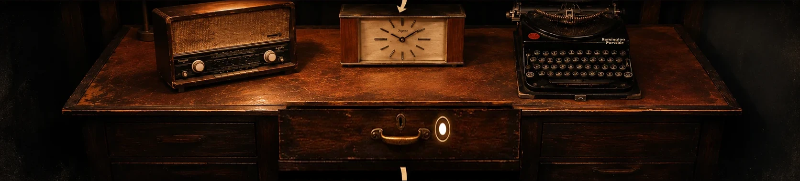
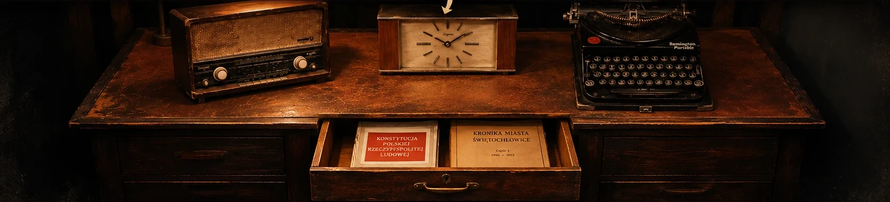

FAMI
LOCK
STARZIK · PAMIĄTKA PO GRZE
JESZCZE JEDNA HISTORIA
Tajna szuflada Starzika
Dotknij radia, zegara lub maszyny. Otwórz środkową szufladę.


Radio
Zegar
Maszyna do pisania
Szuflada
Na telefonie przesuń scenę w bok, aby zobaczyć wszystkie przedmioty.
Otwórz szufladę
×